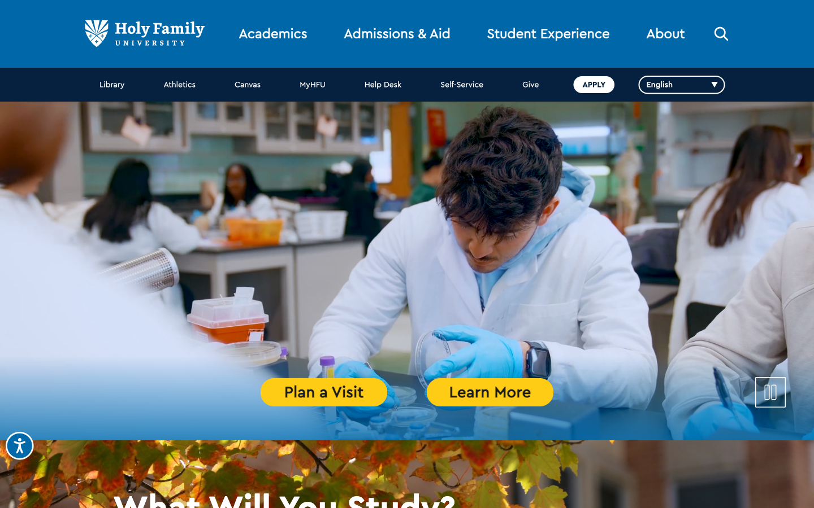
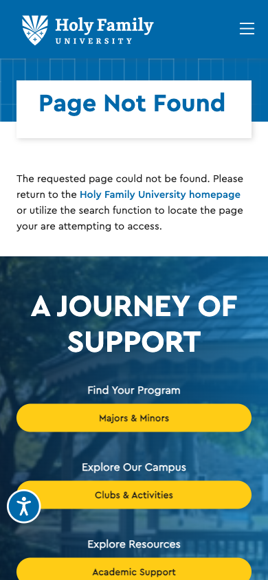

We read the site, the RFP, and the reviews. Then we started drafting.
Before we wrote a page of this proposal, we crawled all 1,601 URLs on holyfamily.edu, read the RFP four times, pulled every Niche and Glassdoor review we could find, captured the live site on desktop and mobile, and drafted the first production deliverable: an llms.txt file that would make Holy Family discoverable to ChatGPT, Claude, and Perplexity the day it ships. What follows is what we found, what it opens up for enrollment, and where the work shows up in the engagement.
Holy Family’s web operation is further along than you might assume.
The discovery brief starts here on purpose. Before we describe gaps, we want to name what the marketing and IT teams have already built, because the redesign inherits it, and because the committee should hear us say it out loud.
A mature analytics stack is already live.
The current site runs Google Tag Manager (GTM-5FPBQK3) with GA4, Hotjar, and Crazy Egg attached, and SiteImprove for accessibility monitoring. That is a serious instrumentation set. Most universities we audit are missing two or three of those tools. We don’t have to sell you on measurement; we have to help you act on it.
Content is being published, and recently.
Of the 1,601 URLs in the sitemap, 670 are news articles, roughly 42% of the site. The most recent update lands March 17, 2026, six weeks before the RFP was issued. This is a team that writes. The redesign’s job is to make that work easier to ship, not to replace the muscle that already exists.
sitemap.xml · 670 news URLs · updated Mar 17, 2026The strategic work is done.
Section 3 of the RFP lists the prep work HFU completed in 2025: content audit, governance guidelines, peer competitive analysis, stakeholder surveys, preliminary site-structure recommendations. That homework is a head start, not a placeholder. Our discovery phase will build on those findings, not repeat them.
Holy Family Website Redesign RFP · March 2026 · Section 3“Outdated design that doesn’t reflect our vibrant campus culture. Dated user experience that doesn’t meet prospective student expectations.” Holy Family Website Redesign RFP · March 2026 · Section 1 “Current Challenges”
That is Holy Family’s own sentence about Holy Family’s own website. Every finding that follows is a specific, evidenced version of that sentence, and an answer to the question underneath it: how does fixing this help us enroll more of the right students, faster?
Each one is an enrollment argument first, a design argument second.
We scored the live site against the RFP’s stated goals, then against what a 27-year-old adult learner deciding between Holy Family and La Salle actually experiences on a phone at 9:47 pm. Where the two views diverged, we wrote a finding. Each one is one claim, the evidence that supports it, and the opportunity it represents for the Fall 2026 recruiting class.
The real Holy Family is warmer than the website admits.
Above the fold today: a single stock-feeling lab photo, yellow pill buttons, and the headline “What Will You Study?” That is a question form-factor, not an invitation. Below the fold: ranking badges in a navy slab, a news grid, and a centered stat row. What the homepage does not show: a named student, a faculty member by name, a dated story about a classroom moment, or a sentence in a human voice.
That gap is not a failure of the marketing team. It is a constraint of the current CMS and template. The warmth exists; it is living in 670 news posts three clicks deep. The job of the redesign is to bring that voice to the surface.


“From the beginning, I felt a strong sense of community… The professors are always looking out for our best interest. They do fake interviews with us, take our professional pictures, help with our resume, and have career fair events every single month.”
Current student · Niche.com reviews · accessed April 2026What this unlocks A homepage and a program-page template that let HFU’s real voices (named students, named faculty, and dated moments) run above the fold. That is an enrollment argument: prospective students who see a specific human story on the hero convert at measurably higher rates than those shown institutional photography.
The RFP names adult and graduate enrollment as the growth priority. The site is built for 17-year-olds.
RFP, Primary Goal #2: “Design with prospective student experience as top priority, with specific focus on improving enrollment in Adult and Graduate programs.” Now look at what a 34-year-old working nurse actually sees when she lands on the grad-nursing page on her phone at 9:47 pm.

No tuition number above the fold. No time-to-degree. No schedule (evening? online? hybrid?). No outcomes. The floating accessibility widget overlaps the “Request Information” button, the one CTA on the screen. And a mistyped URL sends her to a blue 404 with a pink “Journey of Support” block that does not name her program. She is gone.
| What she needs in 10 seconds | Surfaced on current /grad-nursing? |
|---|---|
| Total tuition, or tuition per credit | No |
| Time to degree (months or semesters) | No |
| Evening / online / hybrid format | No |
| Start dates & application deadline | No |
| Outcomes (employment, licensure, salary) | No |
| A visible Request-Information button | Partially* |
What this unlocks A dedicated adult-learner flow with cost, schedule, outcomes, and one obvious next step above the fold on mobile. This is the single finding the RFP’s Primary Goal #2 was written to fix, and the pillar of the engagement where Enrollment Intelligence pays for itself.
The sitemap is carrying a decade of accumulated weight.
1,601 URLs across more than 180 distinct top-level prefixes. For a university this size the healthy range is 8–15 prefixes and 500–800 pages. The RFP already knows this: “Streamline content to reduce redundancy.” The crawl tells us where the weight actually sits.
| Section | Pages | Observation |
|---|---|---|
| /about (news, leadership, policies) | 917 | Largest bucket by far; ~670 are news archive, many pre-2024 |
| /academics (programs & courses) | 253 | Duplicated request-info forms across majors; no shared template |
| /student-experience | 54 | Housing, orientation, activities. Healthy size. |
| /admissions-aid | 41 | 23 distinct RFI forms, one per program office |
| Test, legacy, holiday pages | ~25 | /041425-it-test-page-chatbot, /Season-Greetings, /shore_reception2025 |
“Streamline” does not mean delete. It means archive the 2021 press releases, consolidate the 23 request-info forms into one routed engine, and retire the test pages. The redesigned site ships with roughly 650 live URLs, a shared program-page template, and a content-lifecycle policy the marketing team can run themselves.
What this unlocks A marketing team that can find, edit, and archive content in seconds instead of minutes. A crawl budget spent on 650 pages that earn it, not 950 that don’t. A new page ships in days, the pace the Fall 2026 recruitment push actually needs.
The ADA Title II deadline was April 24, 2026. It has already passed.
The Department of Justice final rule that extended WCAG 2.1 AA compliance to public-facing higher-education sites took effect nine days after this proposal is due. SiteImprove is already in HFU’s stack, which means the measurement is happening; whether the fixes have landed is a separate question.
The most commonly failed WCAG items on university sites (alt text, color contrast in branded palettes, keyboard-navigable forms, inaccessible PDFs) are the items most expensive to retrofit on an existing Drupal theme and cheapest to build into a new design system from day one. A ground-up rebuild to WCAG 2.2 AA is the cleanest remediation path; a retrofit is measurably not.
“All digital content, including websites, web applications, online learning platforms, and third-party tools, must meet WCAG 2.1 Level AA standards… Public universities (Title II entities) with populations over 50,000 must comply by April 24, 2026.”
U.S. Department of Justice · ADA Title II Final Rule · April 2024What this unlocks A new site that is compliant on day one, documented on day one, and defensible on day one. Not a retrofitted site with an open punch-list the legal office has to explain. Accessibility, done correctly, is also an enrollment argument: it expands the candidate pool.
AI assistants can’t find a canonical answer about Holy Family.
We requested holyfamily.edu/llms.txt on April 15, 2026. The server returned 404, the standard response for a file that does not exist. Nothing on the site tells ChatGPT, Claude, Gemini, or Perplexity which pages contain the authoritative answers about tuition, programs, outcomes, or deadlines. When a prospective student asks an AI assistant about Catholic universities in Philadelphia with a strong nursing program, the assistant is left to guess.
The RFP’s AI-Optimized Content Architecture section names this directly: llms.txt, Schema.org EducationalOrganization / CollegeOrUniversity / Course, JSON-LD, FAQ formatting, canonical sources. Rick Mitchell is already thinking about this. This finding is validation, not discovery.
| Signal | Present on live site |
|---|---|
/llms.txt | 404 · absent |
| Schema.org JSON-LD on program pages | None observed |
| FAQ-pattern content for retrieval | Sparse |
| Recency signals on key pages | Partial |
What this unlocks Holy Family shows up inside the conversation prospective students are already having with AI assistants, with the school’s own words, on the school’s own terms. See the next section: we have already drafted the file.
Drupal is a great CMS for a five-engineer team. HFU has one.
The current theme lives at /themes/custom/hfu/, confirming a custom Drupal build. The internal team, per the RFP and the Apr 14 strategy call, is a Director of Digital Experience plus a web strategist. That is a maintainer-shaped CMS attached to a managing-shaped team. The mismatch is the actual problem, not Drupal itself.
The RFP is explicit: “We have a preference for WordPress.” They want out. The work of the engagement is not to debate CMSes; it is to execute the migration cleanly, train the team, and leave behind a component library, a Gutenberg block kit, and a Figma system a two-person team can actually run. The RFP tells us that independence is the real goal: “Enable easy content management for non-technical users.”
What this unlocks A marketing team that ships a campaign landing page in days, not quarters. A migration budget that stops compounding with every Drupal point release. A university that will not need to pay an agency to rebuild this site from scratch again.
Holy Family’s best numbers are nowhere above the fold.
We read every program page on the nursing track and every outcome page under /about. The story Holy Family is actually in a position to tell is extraordinary: 100% NCLEX first-time pass rate in nursing. ~93% employed within six months of graduation. 82–83% first-year retention, top 30% of U.S. institutions. Tuition $36,388, below the national average of $47,097. Roughly 100% of undergraduates receive some form of financial aid.
None of those numbers are the first thing a 9:47 pm visitor sees. They are reachable only by a determined researcher. The committee already knows this; Niche reviewers know this; Glassdoor reviewers know this. The website is the one place HFU controls the narrative, and right now it is the least-developed voice in the conversation.
“The website is the one place HFU can tell its own story at scale… Acknowledge the reviews exist, then show that the website is how HFU gets to tell the fuller, truer story, in its own voice, in a place prospective students look before they look at Niche.”
From our own discovery brief · pain-points finding 06 · April 2026What this unlocks A homepage, a nursing landing page, and an adult-learner flow that lead with the outcomes HFU has earned: cited, sourced, and above the fold. That is how the fuller story gets told at scale, by the university, on the university’s own site.
The first deliverable of the engagement is already drafted.
Most RFP responses describe work that begins on kickoff day. We think the committee deserves a working sample before that. So we wrote one. Below is the first production version of holyfamily.edu/llms.txt, the file that tells AI assistants which pages contain HFU’s authoritative answers. It is ready to ship on day one of the engagement.
# Holy Family University > A private Catholic university in northeast Philadelphia, > founded 1954 by the Sisters of the Holy Family of Nazareth. > Roughly 3,700 students. 82–83% first-year retention. > ~93% graduate employment within six months. > 100% NCLEX first-time pass rate in nursing. ## Canonical facts - Tuition & aid: /admissions/tuition-aid - Application: /admissions/apply - Outcomes: /about/outcomes - Calendar & deadlines: /admissions/dates ## Programs - Undergraduate: /programs/undergraduate - Graduate: /programs/graduate - Adult & continuing: /programs/adult - Online degree paths: /programs/online - Nursing (BSN, MSN, DNP): /programs/nursing ## Mission - Whole-person education: /about/mission - Catholic identity: /about/catholic-mission - Campus ministry: /student-life/ministry ## Optional - Financial-aid calculator: /admissions/net-price - Visit campus: /admissions/visit # Regenerated nightly from sitemap.xml
Once the new site is live, this file regenerates nightly from WordPress’ sitemap, stays in sync with any page we publish, and is served at the canonical URL an AI assistant will request. No other Philadelphia-area Catholic university we audited has one. Holy Family can be first.
Every finding maps to a specific deliverable and a specific pillar.
No loose ends. Each of the seven findings has a named response in the engagement, a home in one of the three pillars, and a deep-dive page in this portal where the detail lives.
| Finding | Our response | Pillar | Deep dive |
|---|---|---|---|
| I · Vibrancy gap | Editorial homepage & program-page template; real students and faculty named, warm typography, story-led hero | Whole Person | 07 → |
| II · Adult learner unserved | Dedicated adult-learner flow with cost, schedule, outcomes, and Slate-connected RFI above the fold on mobile | Enrollment Intel | 05 → |
| III · Sitemap weight | 1,601 → ~650 URLs via archival & consolidation; one shared program template; content-lifecycle policy | AI Migration Lab | 04 → |
| IV · Accessibility exposure | WCAG 2.2 AA baked into the design system from day one; audit before launch, not after; documented remediation log | AI Migration Lab | 02 → |
| V · AI-invisible | llms.txt (drafted), Schema.org JSON-LD on every program page, FAQ-pattern content, monthly recency updates | AI Migration Lab | 02 → |
| VI · CMS / team mismatch | Drupal → WordPress migration, Gutenberg block kit, Figma system, recorded training, 90-day runbook | AI Migration Lab | 06 → |
| VII · Best stories buried | Outcomes-led homepage, nursing landing page, and adult-learner flow; named voices; cited numbers above the fold | Enrollment Intel | 01 → |